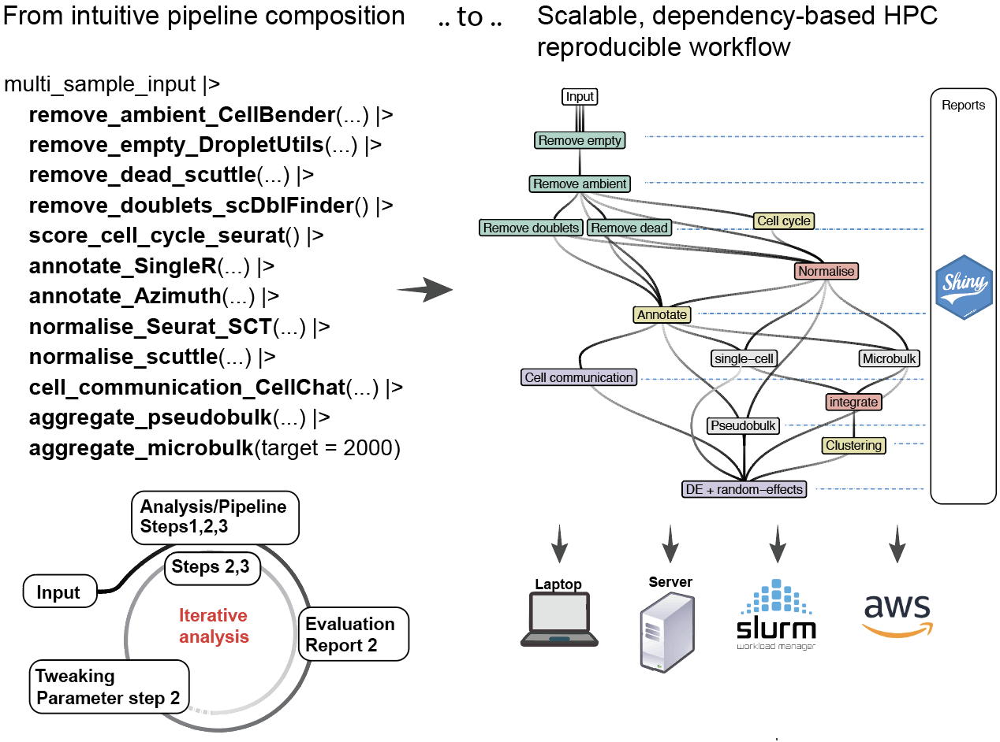

Compose single-cell and spatial analyses with pipes (|>) and leave HPCell scale them on high-performance and cloud, or locally.
HPCell is a grammar and workflow composer that allows to compose pipe-friendly single-cell and spatial pipelines, that are converted to fully integrated, dependency-based parallelised workflow, that can be easily deployed to HPC with no setup, and easily to cloud-computing.

The advent of advanced sequencing techniques, such as microfluidic, microwell, droplet-based methodologies, and spatial transcriptomics technologies, has significantly transformed the study of biological systems. These advancements have resulted in extensive human and mouse cell compendiums, necessitating scalable analysis pipelines for large-scale data. Single-cell RNA-seq pipelines, including Nextflow and Snakemake, provide robust solutions but require extensive customisation and scripting. Graphical workflow systems like Galaxy and KNIME, while user-friendly, often lack the scalability needed for large datasets. With tools like Bioconductor, Seurat, scater, and others, the R ecosystem offers comprehensive solutions for single-cell RNA sequencing analysis but faces limitations in parallelisation efficiency. The targets R ecosystem addresses these challenges by offering an integrated, high-performance, cloud-compatible solution that optimises computational resources and enhances workflow robustness. We introduce HPCell, a modular grammar based on tidy principles, utilising targets to parallelise single-cell and spatial R workflows efficiently. HPCell simplifies workflow management, improves scalability and reproducibility, and generates visual reports for enhanced data interpretability, significantly accelerating scientific discovery in the single-cell RNA sequencing community.
The key features of HPCell include:
Native R Pipeline: HPCell is developed to work natively within the R environment, enhancing usability for R users without requiring them to learn new, workflow-specific languages.
High Performance Computing Support: HPCell supports scaling for large datasets and enables parallel processing of tasks on High Performance Computing platforms.
Reproducibility and Consistency: The framework ensures reproducibility and consistent execution environments through automatic dependency generation.
remotes::install_github("MangiolaLaboratory/HPCell")The pipeline accepts a vector of file paths. If this vector is named, those names will be used for the reports. HPCell accepts a variety of data containers, including on-disk (which we recomend).
The power of HPCell is that despite you can compose your pipeline simply using the pipe (|>), it is evaluated as a dependency graph by target workflow manager. This has several advantages:
HPCell only runs the affected dependencies downstream. This is helpful when a change of parameters can affect downstream analyses, which are re-run automatically
library(HPCell)
library(crew)
input_hpc |>
# Initialise pipeline characteristics
initialise_hpc(
gene_nomenclature = "symbol",
data_container_type = "seurat_rds"
) |>
remove_empty_DropletUtils() |> # Remove empty outliers
remove_dead_scuttle() |> # Remove dead cells
score_cell_cycle_seurat() |> # Score cell cycle
remove_doublets_scDblFinder() |> # Remove doublets
annotate_cell_type() |> # Annotation across SingleR and Seurat Azimuth
normalise_abundance_seurat_SCT(factors_to_regress = c(
"subsets_Mito_percent",
"subsets_Ribo_percent",
"G2M.Score"
)) |>
calculate_pseudobulk(group_by = "monaco_first.labels.fine")Your pipeline can be deployed locally using multiple cores. You can specify the resource allocation as computing_resources in initialise_hpc()
computing_resources = crew_controller_local(workers = 10)This resource interfaces with SLURM without the need of complex setups
library(crew.cluster)
computing_resources =
crew.cluster::crew_controller_slurm(
slurm_memory_gigabytes_per_cpu = 5,
workers = 100, # max 100 jobs at the time are launched to the cluster
tasks_max = 5 # Shots a worker after 5 tasks.
)For large-scale analyses, where datasets vary in size, using a unique resource set can be inefficient. For example, few very large datasets might require 50 Gb of memory, while the majority might only require 5Gb. Asking 50Gb for all jobs would be inefficient (would lead to maximum usage per user, and limit the parallelisation), while asking 5Gb would lead to job failure.
You can provide an array of tier labels (of the same length as sample input vector), and the resources linked with those labels
# For two samples
input_hpc |>
# Initialise pipeline characteristics
initialise_hpc(
gene_nomenclature = "symbol",
# We have three samples, to which we give two different resources
data_container_type = "seurat_rds", tier = c("tier_1", "tier_1", "tier_2"),
# We specify the two resources
computing_resources = list(
crew_controller_slurm(
name = "tier_1",
slurm_memory_gigabytes_per_cpu = 5,
workers = 50,
tasks_max = 5
),
crew_controller_slurm(
name = "tier_2",
slurm_memory_gigabytes_per_cpu = 50,
workers = 10,
tasks_max = 5
)
)HPCell offer module constructor that allow users and developers to build new models on the fly and/or contribute to the ecosystem.
For example, let’s create a toy module, where we normalise the seurat datasets
input_hpc |>
# Initialise pipeline characteristics
initialise_hpc(
gene_nomenclature = "symbol",
data_container_type = "seurat_rds"
) |>
hpc_iterate(
user_function = NormalizeData |> quote(), # The function, quoted to not be evaluated on the spot
object = "data_object" |> is_target(), # The argument to the function. `is_target()` declares the dependency.
# Other arguments that are not a dependency can also be used
target_output = "seurat_normalised", # The name of the output dependency
packages = "Seurat" # Software packages needed for the execution
)
tar_read(seurat_normalised)Now let’s create a more complex module, where we accept both single-cell experiment and Seurat objects
input_hpc |>
# Initialise pipeline characteristics
initialise_hpc(
gene_nomenclature = "symbol",
data_container_type = "seurat_rds"
) |>
hpc_iterate(
user_function = (function(x){
if(x |> is("SingleCellExperiment"))
x |> as.Seurat() |> NormalizeData()
else if(x |> is("Seurat"))
x |> NormalizeData()
else warning("Data format not accepted")
}) |> quote(), # The function, quoted to not be evaluated on the spot
x = "data_object" |> is_target(), # The argument to the function. `is_target()` declares the dependency.
target_output = "seurat_normalised", # The name of the output dependency
packages = "Seurat" # Software packages needed for the execution
)
tar_read(seurat_normalised)HPCell allows you to create reports of any combination of analysis results, that will be rendered once the necessary analyses will be completed.
Here we provide a toy example
input_hpc |>
# Initialise pipeline characteristics
initialise_hpc(
gene_nomenclature = "symbol",
data_container_type = "seurat_rds"
) |>
hpc_report(
"empty_report", # The name of the report output
rmd_path = paste0(system.file(package = "HPCell"), "/rmd/test.Rmd"), # The path to the Rmd. In this case it is stored within the package
empty_list = "empty_tbl" |> is_target(), # The results and targets needed for the report
sample_names = "sample_names" |> is_target() # The results and targets needed for the report
)
tar_read(empty_report)Parameters 1. input_read_RNA_assay SingleCellExperiment object containing RNA assay data. 2. filter_empty_droplets Logical value indicating whether to filter the input data.
We filter empty droplets as they don’t represent cells, but include only ambient RNA, which is uninformative for our biological analyses.
Outputs barcode_table which is a tibble containing log probabilities, FDR, and a classification indicating whether cells are empty droplets.
This step includes 4 sub steps: Filtering mitochondrial and ribosomal genes, ranking droplets, identifying minimum threshold and removing cells with RNA counts below this threshold
HPCell::empty_droplet_id(input_read, filter_empty_droplets)Mitochondrial and ribosomal genes exhibit expression patterns in single-cell RNA sequencing (scRNA-seq) data that are distinct from the patterns observed in the rest of the transcriptome. They are filtered out to improve the quality and interpretability of scRNA-seq data, focusing the analysis on genes more likely to yield insights
# Genes to exclude
location <- AnnotationDbi::mapIds(
EnsDb.Hsapiens.v86,
keys= BiocGenerics::rownames(input_read_RNA_assay),
column="SEQNAME",
keytype="SYMBOL"
)
mitochondrial_genes = BiocGenerics::which(location=="MT") |> names()
ribosome_genes = BiocGenerics::rownames(input_read_RNA_assay) |> stringr::str_subset("^RPS|^RPL")From the one with highest amount of mRNA, to the lowest amount of mRNA. For this we use the function barcodeRanks()
DropletUtils::barcodeRanks(GetAssayData(input_read_RNA_assay, assay, slot = "counts"))A minimum threshold cutoff ‘lower’ is set to exclude cells with low RNA counts If the minimum total count is greater than 100, we exclude the bottom 5% of barcodes by count. Otherwise lower is set to 100.
(This step will not be executed if the filter_empty_droplets argument is set to FALSE, in which case all cells will be retained)
(Any droplets with missing data in the empty_droplet column are conservatively assumed to be empty.)
significance_threshold = 0.001
... |>
DropletUtils::emptyDrops( test.ambient = TRUE, lower=lower) |>
mutate(empty_droplet = FDR >= significance_threshold)
barcode_table <- ... |>
mutate( empty_droplet = FALSE)cell_cycle_scoring)
Parameters 1. input_read_RNA_assay: SingleCellExperiment object containing RNA assay data. 2. empty_droplets_tbl: A tibble identifying empty droplets.
This step includes 2 sub steps: Normalization and cell cycle scoring.
Returns a tibble containing cell identifiers with their predicted classification into cell cycle phases: G2M, S, or G1 phase.
HPCell::cell_cycle_scoring(input_read,
empty_droplets_tbl)Normalize the data using the NormalizeData function from Seurat to make the expression levels of genes across different cells more comparable
...|>
NormalizeData()Using the CellCycleScoring function to assign cell cycle scores of each cell based on its expression of G2/M and S phase markers. Stores S and G2/M scores in object meta data along with predicted classification of each cell in either G2M, S or G1 phase
...|>
Seurat::CellCycleScoring(
s.features = Seurat::cc.genes$s.genes,
g2m.features = Seurat::cc.genes$g2m.genes,
set.ident = FALSE
) alive_identification)
Parameters 1. input_read_RNA_assay: SingleCellExperiment object containing RNA assay data. 2. empty_droplets_tbl: A tibble identifying empty droplets. 3. annotation_label_transfer_tbl: A tibble with annotation label transfer data.
Filters out dead cells by analyzing mitochondrial and ribosomal gene expression percentages.
Returns a tibble containing alive cells.
This step includes 6 sub-steps: Identifying chromosomal location of each read, identifying mitochondrial genes, extracting raw Assay (e.g., RNA) count data, compute per-cell QC metrics, determine high mitochondrion content, identify cells with unusually high ribosomal content
HPCell::alive_identification(input_read,
empty_droplets_tbl,
annotation_label_transfer_tbl)We retrieves the chromosome locations for genes based on their gene symbols. - The mapIds function from the AnnotationDbi package is used for mapping between different types of gene identifiers. - The EnsDb.Hsapiens.v86 Ensembl database is used as the reference data set.
Identify the mitochondrial genes based on their symbol (starting with “MT”)
Assay (e.g., RNA) count data
Raw count data from the the “RNA” assay is extracted using the GetAssayData function from Seurat and stored in the “rna_counts” variable. This extracted data can be used for further analysis such as normalization, scaling, identification of variable genes, etc.,
rna_counts <- Seurat::GetAssayData(input_read_RNA_assay, layer = "counts", assay=assay)Quality control metrics are calculated using the perCellQCMetrics function from the scater package. Metrics include sum of counts (library size), and the number of detected features.
qc_metrics <- scuttle::perCellQCMetrics(rna_counts, subsets=list(Mito=which_mito)) %>%
dplyr::select(-sum, -detected)isOutlier function from scuttle to the subsets_Mito_percent column. - Outliers are converted to a logical value: TRUE for outliers and FALSE for non-outliers.PercentageFeatureSet from Seurat is used to compute the proportion of counts corresponding to ribosomal genes
subsets_Ribo_percent = Seurat::PercentageFeatureSet(input_read_RNA_assay, pattern = "^RPS|^RPL", assay = assayisOutlier function from scuttle to the subsets_Ribo_percent column. - The outlier stays is converted to a logical value: TRUE for outliers and FALSE for non-outliers.
ribosome = ... |>
mutate(high_ribosome = scuttle::isOutlier(subsets_Ribo_percent, type="higher")) |>
mutate(high_ribosome = as.logical(high_ribosome)) doublet_identification)
Parameters: 1. input_read_RNA_assay SingleCellExperiment object containing RNA assay data. 2. empty_droplets_tbl A tibble identifying empty droplets. 3. alive_identification_tbl A tibble identifying alive cells. 4. annotation_label_transfer_tbl A tibble with annotation label transfer data. 5. reference_label_fine Optional reference label for fine-tuning.
Applies the scDblFinder algorithm to the filter_empty_droplets dataset. It supports integrating with SingleR annotations if provided and outputs a tibble containing cells with their associated scDblFinder scores.
Returns a tibble containing cells with their scDblFinder scores
HPCell::doublet_identification(input_read,
empty_droplets_tbl,
alive_identification_tbl,
annotation_label_transfer_tbl,
reference_label_fine)The scDblFinder function from scDblFinder is used to detect doublets, which are cells originating from two or more cells being captured in the same droplet, in the scRNA-seq data. Doublets can skew analyses and lead to incorrect interpretations, so identifying and potentially removing them is important.
filter_empty_droplets <- ... |>
scDblFinder::scDblFinder(clusters = NULL) annotation_label_transfer)
Parameters 1. input_read_RNA_assay: SingleCellExperiment object containing RNA assay data. 2. empty_droplets_tbl: A tibble identifying empty droplets. 3. reference_azimuth: Optional reference data for Azimuth.
This step utilizes SingleR for cell-type identification using reference data sets (Blueprint and Monaco Immune data). It can also perform cell type labeling using Azimuth when a reference is provided.
This step includes 3 sub steps: Filtering and normalisation, reference data loading, Cell Type Annotation with MonacoImmuneData for Fine and Coarse Labels and cell Type Annotation with BlueprintEncodeData for Fine or Coarse Labels
HPCell::annotation_label_transfer(input_read,
empty_droplets_tbl,
reference_read)filter function from dplyr.logNormCounts is used to apply log-normalization to the count data. This helps to make the gene expression levels more comparable across cells.
sce = ... |>
dplyr::filter(!empty_droplet) |>
scuttle::logNormCounts()Load cell type reference data from BlueprintEncodeData and MonacoImmuneData provided by the celldex package for cell annotation based on gene expression profiles
blueprint <- celldex::BlueprintEncodeData()
MonacoImmuneData = celldex::MonacoImmuneData()MonacoImmuneData for Fine and Coarse Labels
(depending on the tissue type selected by the user)
SingleR with the MonacoImmuneData reference with fine-grained cell type labels and coarse-grained labelsblueprint_first.labels.fine and blueprint_first.labels.coarse which contains scores on the likely cell type that each read belongs todata_annotated =
SingleR::SingleR(
ref = blueprint,
assay.type.test= 1,
labels = blueprint$label.fine
) |>
rename(blueprint_first.labels.fine = labels) |>
SingleR::SingleR(
ref = blueprint,
assay.type.test= 1,
labels = blueprint$label.main
) |>
as_tibble(rownames=".cell") |>
nest(blueprint_scores_coarse = starts_with("score")) |>
select(-one_of("delta.next"),- pruned.labels) |>
rename( blueprint_first.labels.coarse = labels))BlueprintEncodeData for Fine and Coarse Labels
SingleR with the blueprint reference with fine-grained cell type labels and coarse-grained labels.non_batch_variation_removal)
Regressing out variations due to mitochondrial content, ribosomal content, and cell cycle effects.
Parameters 1. input_read_RNA_assay Path to demultiplexed data. 2. empty_droplets_tbl Path to empty droplets data. 3. alive_identification_tbl A tibble from alive cell identification. 4. cell_cycle_score_tbl A tibble from cell cycle scoring.
Returns normalized and adjusted data
This step includes 3 sub-steps: Construction of counts data frame, data normalization with SCTransform and normalization with NormalizeData
HPCell::non_batch_variation_removal(input_read,
empty_droplets_tbl,
alive_identification_tbl,
cell_cycle_score_tbl)counts data frame:
We construct the counts data frame by aggregating outputs from empty_droplets_tbl, alive_identification_tbl and cell_cycle_score_tbl. - We exclude empty droplets from initial raw count data. - Next we incorporate ribosomal and mitochondrial percentages which offer insights into cellular health and metabolic activity - Finally we add cell cycle G2/M score to each cell’s profile.
counts = ... |>
left_join(empty_droplets_tbl, by = ".cell") |>
dplyr::filter(!empty_droplet) |>
left_join(
HPCell::alive_identification_tbl |>
select(.cell, subsets_Ribo_percent, subsets_Mito_percent),
by=".cell"
) |>
left_join(
cell_cycle_score_tbl |>
select(.cell, G2M.Score),
by=".cell"
)SCTransform:
We apply the SCTransform function to apply variance-stabilizing transformation (VST) to counts which normalizes and scales the data and also performs feature selection and controls for confounding factors. This results in data that is better suited for downstream analysis such as dimensionality reduction and differential expression analysis.
normalized_rna <- Seurat::SCTransform(
counts,
assay=assay,
return.only.var.genes=FALSE,
residual.features = NULL,
vars.to.regress = c("subsets_Mito_percent", "subsets_Ribo_percent", "G2M.Score"),
vst.flavor = "v2",
scale_factor=2186
)NormalizeData:
If the ADT assay is present, we further normalize our counts data using the centered log ratio (CLR) normalization method. This mitigates the effects of varying total protein expression across cells. If the ADT assay is absent, we can simply omit this step.
# If "ADT" assay is present
... |>
Seurat::NormalizeData(normalization.method = 'CLR', margin = 2, assay="ADT") create_pseudobulk)
Parameters 1. pre-processing_output_S: Processed dataset from preprocessing 2. assays: assay used, default = “RNA” 3. x: User defined character vector for c(Tissue, Cell_type_in_each_tissue)
Aggregates cells based on sample and cell type annotations, creating pseudobulk samples for each combination. Handles RNA and ADT assays.
Returns a list containing pseudo bulk data aggregated by sample and by both sample and cell type.
HPCell::create_pseudobulk(preprocessing_output_S, assays = "RNA", x = c(Tissue, Cell_type_in_each_tissue))We apply some data manipulation steps to get unique feature because RNA and ADT both can have similarly named genes. In our data set we may contain information on both RNA and ADT assays: - RNA: Measures the abundance of RNA molecules for different genes within a cell. - ADT: Quantifies protein levels on the cell surface using antibodies tagged with DNA bar codes, which are then detected alongside RNA.
The challenge arises because both RNA and ADT data might include identifiers (gene names for RNA, protein names for ADT) that could be the same or very similar. However, they represent different types of biological molecules (nucleic acids vs. proteins). To accurately analyze and distinguish between these two data types in a combined data set, we need to ensure that each feature (whether it’s an RNA-measured gene or an ADT-measured protein) has a unique identifier. Thus we apply these data manipulation steps:
Cells are aggregated based on the Tissue and Cell_type_in_each_tissue columns. By summarizing single-cell data into groups, it mimics traditional bulk RNA-seq data while retaining the ability to dissect biological variability at a finer resolution
# Aggregate cells
... |>
tidySingleCellExperiment::aggregate_cells(!!x, slot = "data", assays=assays)